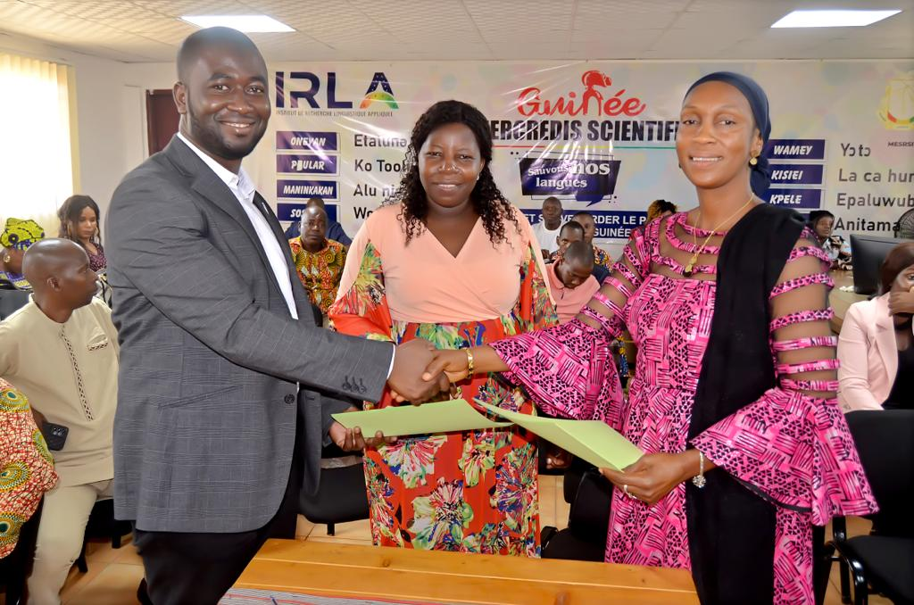
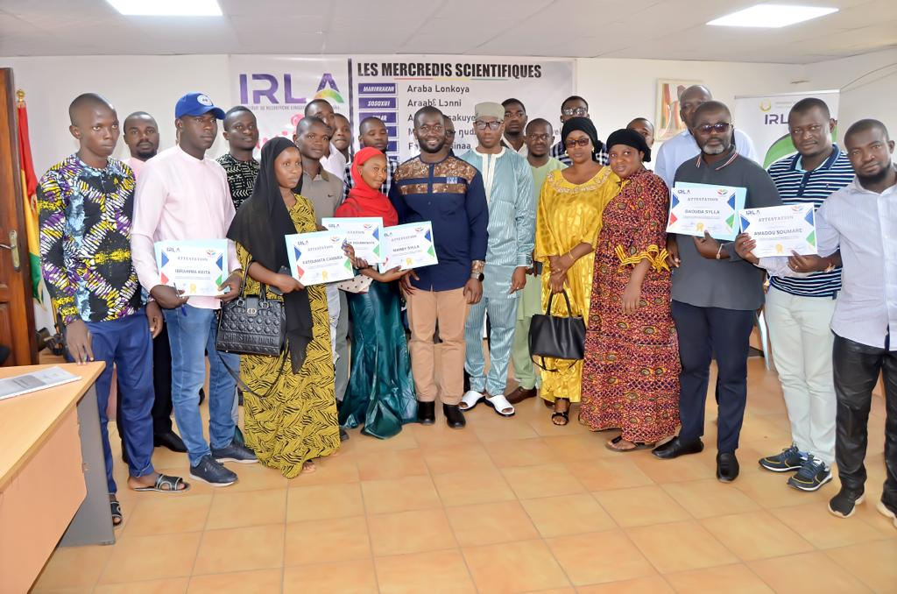

Discussion scientifique : « Nos langues: patrimoine, identité et souveraineté »

Le mercredi 7 juin 2023, l’IRLA a organisé une journée de débat scientifique autour du thème « Nos langues : patrimoine, identité et souveraineté nationale », en présence de l’ancien Premier ministre Lansana Kouyaté. Il a déclaré : « …venir débattre ici, veut dire que le rêve qu’on a eu depuis notre indépendance n’est pas encore achevé… »
3ᵉ édition de la lecture et de l’écriture en langues maternelles

Le 6 avril 2023, IRLA a lancé la 3ᵉ édition de la lecture et de l’écriture dans les langues maternelles, réaffirmant son engagement à harmoniser les alphabets (Maninkan, Pular…) en collaboration avec l’UNESCO.
Colloque international : défis du bilinguisme

Le 8 novembre 2023, un colloque à l’INRAP de Donka a rassemblé des experts. Dr Mohamed Bintou Keïta a souligné que l’IRLA est « le gardien du patrimoine linguistique guinéen ».
Valorisation: lancement d’une nouvelle collection avec L’Harmattan Guinée

Le 15 janvier 2025, IRLA a dévoilé une collection de six ouvrages en langues nationales, soutenus par L’Harmattan Guinée lors d’une session de dédicace.
Plaidoyer pour l’égalité constitutionnelle des langues nationales

Le 31 juillet 2024, Dr Keïta a exhorté l’inclusion explicite des huit langues nationales dans la nouvelle Constitution, pour renforcer l’égalité linguistique.
Portes ouvertes à l’IRLA, présentation de ses missions
Le 1er septembre 2022, l’IRLA a ouvert ses portes au public dans le but de faire découvrir ses actions de recherche, ses méthodes et ses perspectives.
Journée de concertation sur la politique linguistique nationale

En décembre 2022, l’IRLA a réuni des experts à Gamal Abdel Nasser sur l’élaboration d’une politique linguistique nationale, un cadre crucial pour la valorisation des langues.
Campagne de promotion avec concertation d’experts linguistiques

Le 13 décembre 2022, l’institut a organisé une consultation d’experts pour définir des lignes directrices en faveur des langues nationales.
Débat scientifique autour de la langue N’ko et Adlam

Inspiré de la session de concertation de décembre 2022 sur des alphabets alternatifs, l’IRLA a exploré les défis du N’ko et Adlam dans la transcription multilingue.